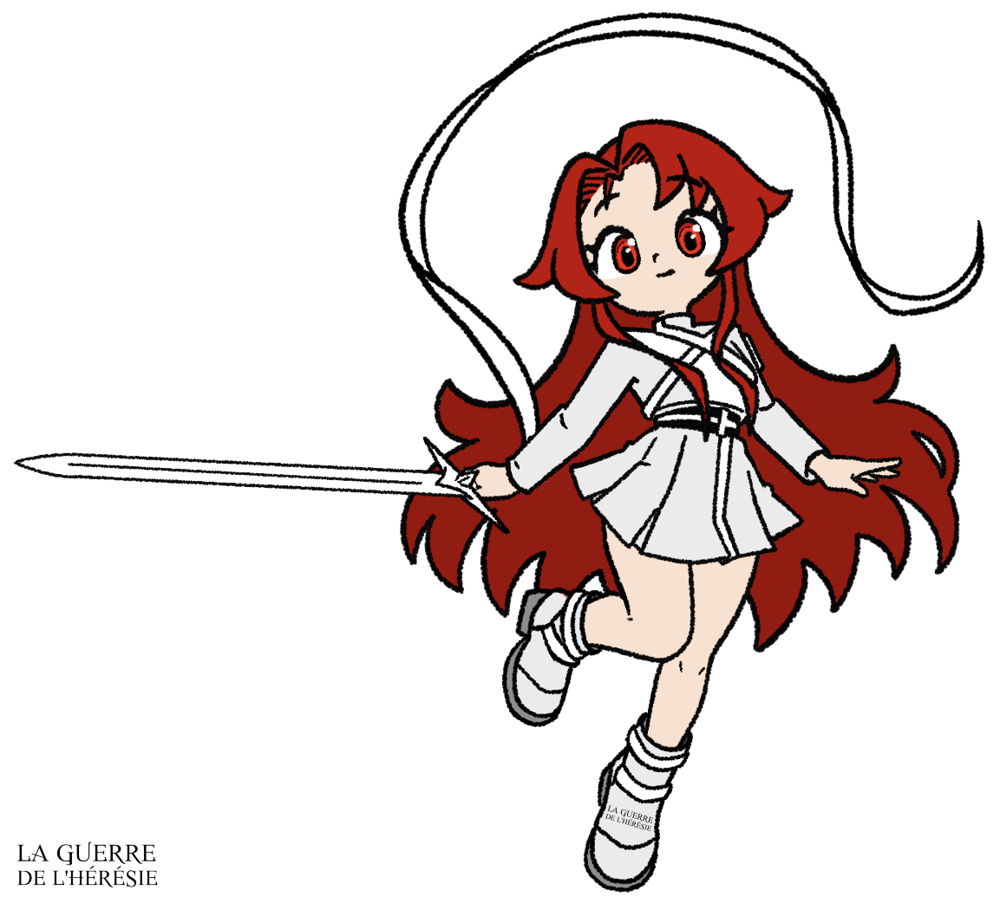

✦ ARCHIVES DU GRIMOIRE ✦
HÉRÉLIANDE
La Langue des Rois: Grimoire · Héréliande – La Sola
234 / 234 entrées affichées
Aucun résultat. Essayez un autre mot ou effacez la recherche.
Pronoms 8 entrées
| Héréliande | La Sola |
|---|---|
| éa | je |
| ia | tu |
| néa | nous |
| ua | il |
| ua | elle |
| uas | ils |
| uas | elles |
| via | vous |
Déterminants 16 entrées
| Héréliande | La Sola |
|---|---|
| é | mon |
| és | mes |
| i | ton |
| is | tes |
| né | notre |
| nés | nos |
| u | son |
| us | ses |
| vi | votre |
| vis | vos |
| x | un |
| x | une |
| xs | des |
| y | la |
| y | le |
| ys | les |
Règles 4 entrées
| Symbole | Règle |
|---|---|
| ' | accord |
| z | ne |
| z | pas |
| – | , |
Basiques 28 entrées
| Héréliande | La Sola |
|---|---|
| aom | ô |
| ar | avec |
| ard | vers |
| astums | tous |
| cor | comme |
| der | dans |
| doe | à |
| doh | au |
| é | me |
| én | moi |
| fal | loin |
| fon | par |
| i | te |
| ifen | enfin |
| in | toi |
| lias | merci |
| olh | de |
| olh | du |
| ora | après |
| orar | par-delà |
| owa | où |
| rus | sur |
| taa | travers |
| tau | et |
| uhe | que |
| uhe | seulement |
| uhi | qui |
| zieln | peut-être |
Noms 122 entrées
| Héréliande | La Sola |
|---|---|
| adryl | sœur |
| adryr | frère |
| aélia | héritier |
| ahis | artefact |
| ahis | sphère |
| ahis | trésor |
| ahis-sela | Sphère de l’Hérésie |
| aii | plaisir |
| alezie | éternel |
| alphard | origine |
| amia | présent |
| aria | futur |
| asmas | démon |
| astoria | la plus claire des étoiles |
| astoria | étoile |
| atiese | prince |
| aturia | roi |
| bah | bain |
| caer | château |
| cea | sorcière |
| cea | magie |
| cilel | chemin |
| deon | souverain |
| deon | empereur |
| devo | vide |
| devorh | trou |
| doimh | cité |
| elia | enfant |
| éliande | sacré |
| elias | descendants |
| elw | épée |
| elwen | épéiste |
| enor | ciel |
| ereus | vérité |
| ereus | réalité |
| erium | énergie |
| erium | puissance |
| eru | divinité |
| erun | héros |
| esabel | serviteur |
| esax | escouade |
| esil | protection |
| feeis | fée |
| fhaed | combat |
| fhains | honneur |
| freea | glace |
| gid | nuage |
| gid | brume |
| heara | eau |
| hearaii | boisson |
| her | langue |
| hialga | temps |
| hirdire | justice |
| ibus | bien |
| ibus | droit |
| ihnte | vent |
| ihntia | amour |
| ihntia | pardon |
| ihntial | femme |
| ihntial | copine |
| ihntiar | mari |
| ihntiar | copain |
| immia | certitude |
| imper | détenteur |
| imper | maître |
| iredra | temple |
| ires | larmes |
| irilla | illusion |
| irilla | rêve |
| irs | mort |
| javas | travail |
| kyor | gardien |
| laud | hiver |
| lazias | la plus sombre des nuits |
| lazias | nuit |
| liem | traître |
| lirium | sylphide |
| lirne | fond |
| llia | foudre |
| lmine | rivière |
| lya | nom |
| lyr | vie |
| lyrntia | cœur |
| maloyw | légende |
| maloyw | histoire |
| mereus | mensonge |
| messress | tristesse |
| meum | réserve |
| mila | calme |
| nate | destin |
| neacht | désert |
| neacht | sable |
| omias | guide |
| oria | lumière |
| oyven | paradis |
| res | vache |
| res | gibier |
| riem | argent |
| sacrilen | sacrifice |
| secrum | secret |
| sela | hérésie |
| sela | affront |
| silda | ami |
| silda | compère |
| stigmate | pouvoir |
| uax | union |
| ulgur | loup |
| unwe | yeux |
| upus | fantôme |
| upus | spectre |
| vell | poison |
| vespia | lune |
| vols | tempête |
| volus | monstre |
| waed | sang |
| ween | roche |
| wek | souterrain |
| wen | automne |
| wvil | mine |
| ygg | arbre |
| zias | ténèbres |
| zisht | passé |
Verbes 26 entrées
| Héréliande | La Sola |
|---|---|
| 'a | avoir |
| 'aihan | montrer |
| 'al | pouvoir |
| 'astums | unir |
| 'celar | regarder |
| 'dess | appeler |
| 'dis | tracer |
| 'dis | guider |
| 'esil | protéger |
| 'esme | danser |
| 'héend | ordonner |
| 'homie | rentrer |
| 'ihntia | aimer |
| 'irdis | bénir |
| 'kirihe | mourir |
| 'lahaan | lever |
| 'lorwen | revoir |
| 'lorwen | retrouver |
| 'lyrdeon | régner |
| 'merhilas | rencontrer |
| 'orihas | ouvrir |
| 'res | devoir |
| 's | être |
| 'ves | venir |
| 'ysil | cacher |
| 'ysil | se cacher |
Adjectifs 30 entrées
| Héréliande | La Sola |
|---|---|
| aérma | doux |
| anz | noir |
| asht | dernier |
| cisato | piquant |
| eaze | vert |
| eldrich | grand |
| idear | perpétuel |
| inae | rouge |
| inae | rubis |
| irill | bleu |
| irill | saphir |
| liehts | pauvre |
| lirne | profond |
| lys | froid |
| metui | aimé |
| metui | cher |
| metui | respecté |
| mir | identique |
| mir | pareil |
| odan | fidèle |
| riem | argenté |
| riem | faux |
| ryks | solide |
| ryks | dur |
| sill | délicat |
| upusal | spectral |
| vatar | puissant |
| we | blanc |
| wvil | fort |
| yas | pur |
✦ POURSUIVRE DANS LES ARCHIVES ✦
Explorer La Guerre de l’Hérésie
✧Le GrimoireRetrouver tous les personnages
✦Page principaleLivres, univers et personnages
❧L’HéréliandeDécouvrir la langue de l’Hérésie
